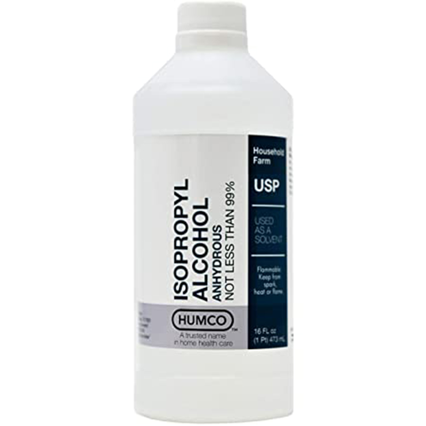
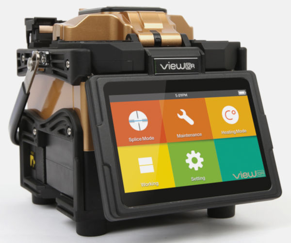

Herramientas para trabajos de Fibra Óptica


Lapiz Limpiador
Sirve para limpiar los conectores de fibra y que los mismos no generen tanta atenuación
Leer mas
Cleaver
Sirve para cortar los pelos de fibra con el fin de dejar un lado completamente recto (para fusión)
Leer mas
Pinza Peladora
Se utiliza para sacar las diferentes vainas de un pelo de fibra, las cuales son muy finas
Leer mas
Pelador de Drop Plano
Se usa para desnudar cables con Chaquetas de 900um y resulta excelente en cables Planos o Flat
Leer mas

Alcohol Isopropilico
Es un alcohol incoloro, inflamable, con un olor intenso y muy miscible con el agua
Leer mas

Fusionadora
Es una máquina que se utiliza para empalmar una fibra óptica con otra mediante varios métodos
Leer mas